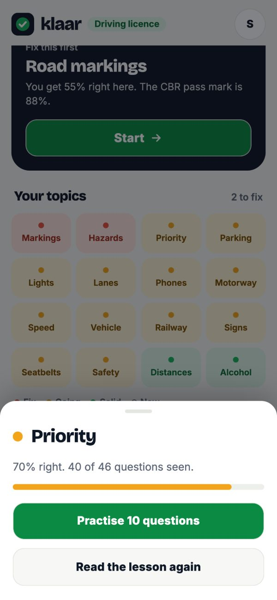
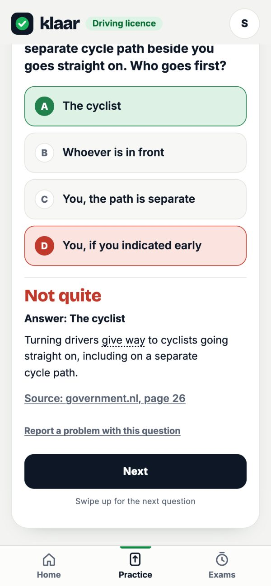

A plan, not a pile of questions
Set your exam date. Klaar shows how ready you are, how many questions a day gets you there, and the one thing to do next.
Your weakest topics come first. Questions you get wrong come back until you get them right.

See the situation
Who goes first at this junction? Klaar draws it from above: your car, the other road users, and where each one is going.
Hazard questions show the road from the driver's seat, with everything at its real distance.

Know the rule and the reason
Every answer comes with a short explanation. Most link to the exact page of the official English rulebook on government.nl, so you can check it yourself.
Dutch road words like bebouwde kom and haaientanden are explained where they appear.

Mock exams with the real rules
50 questions, 30 minutes, 44 right to pass, and no feedback until you hand in. The same format as the CBR theory exam.
Pass the full mock three times in a row and you are ready to book.

How to start
- 1Open Klaar on your phoneIt runs in the browser. Add it to your home screen and it works without internet.
- 2Tell it your exam dateNo date yet? A guess is fine. You can change it later.
- 3Do today's questionsAbout 15 minutes a day. Each new topic starts with a short lesson.
Questions people ask
Is Klaar official CBR material?
No. The questions are original, written in the style of the exam and checked against the official traffic rules. Klaar is not connected to the CBR.
What does it cost?
It is free right now. You do not need an account or a card.
Can I take the real theory exam in English?
Yes. The CBR offers the car theory exam in English. Check cbr.nl for the current price and how to book.
Is Klaar enough to pass?
Practise until you pass the full mock exam three times in a row. We also recommend the official practice exam on cbr.nl before the real one.
Where is my progress stored?
On your phone only. Nothing personal is sent anywhere. You can save a backup file from your profile.
Does it work on iPhone and Android?
Yes, on both, in any modern browser.